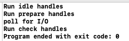

原文连接:https://www.cnblogs.com/QH-Jimmy/p/10821342.html
好久没写东西了，过了一段咸鱼生活，无意中想起了脉脉上面一句话: 始终保持自己的竞争力。所以，继续开写！
一般的JavaScript源码看的已经没啥意思了，我也不会写什么xx入门新手教程，最终决定还是啃原来的硬骨头，从外层libuv => node => v8一步步实现原有的目标吧。
libuv核心还是事件轮询，前几天从头到尾看了一遍官网的文档，对此有了一些更深的理解。
(虽然现在开发用的mac，但是为了衔接前面的文章，所以代码仍旧以windows系统为基础，反正差别也不大)
首先看一眼官网给的图：
0.png)
理论上轮询都是一个无尽循环，所以不用在意loop alive问题。
上图中，udpate loop time、Run due timers两块内容我已经在别的博客中讲解过，这里就懒得发传送门了。
有两个简单的概念需要稍微提一下，libuv中有两个抽象概念贯穿整个框架：handle、request。其中handle生命周期较长，且有自己回调方法的一个事务，比如说TCP的handle会处理每一个TCP连接，并触发connection事件。request属于handle中一个生命周期短，且简单的行为，比如向文件进行读、写等等。
这一篇主要看一下接下来剩余的部分，由于性质不太一样，所以并不会按顺序依次分析，而是从易到难，且源码会做大量简化，有兴趣的人可以自己去看。
事件轮询方法源码精炼如下:
int uv_run(uv_loop_t *loop, uv_run_mode mode) {
// ...
while (r != 0 && loop->stop_flag == 0) {
// update loop time
uv_update_time(loop);
// run due timers
uv__run_timers(loop);
// call pending callbacks
ran_pending = uv_process_reqs(loop);
// run idle handles
uv_idle_invoke(loop);
// run prepare handles
uv_prepare_invoke(loop);
// poll的阻塞时间处理
timeout = 0;
if ((mode == UV_RUN_ONCE && !ran_pending) || mode == UV_RUN_DEFAULT)
timeout = uv_backend_timeout(loop);
// poll for I/O
if (pGetQueuedCompletionStatusEx)
uv__poll(loop, timeout);
else
uv__poll_wine(loop, timeout);
// run check handles
uv_check_invoke(loop);
// call close callbacks
uv_process_endgames(loop);
}
// ...
return r;
}
Call close callbacks
这类回调比较特殊，官网是这么解释的: Close callbacks are called. If a handle was closed by calling uv_close() it will get the close callback called.
简单来讲，就是仅在为了关闭一个handle，调用uv_close方法中所带的callback会被认为是一个close callbacks。在使用node的时候，所有的操作(比如fs.readFile)不可主动取消，所以轮询中这一步在JS层面是感知不到的。
作用上相当于vue钩子函数中的destroy，由于触发是在轮询的最后一步，适合做一些收尾的工作，比如关闭文件描述符等等。
源码中体现如下，首先是uv_close:
void uv_close(uv_handle_t* handle, uv_close_cb cb) {
// 很多代码...
case UV_PREPARE:
uv_prepare_stop((uv_prepare_t*)handle);
uv__handle_closing(handle);
uv_want_endgame(loop, handle);
return;
}uv_close方法除了做关闭handle的本职工作，在最后都会调用一个uv_want_endgame方法收尾，这个方法是一个静态方法。
INLINE static void uv_want_endgame(uv_loop_t* loop, uv_handle_t* handle) {
if (!(handle->flags & UV_HANDLE_ENDGAME_QUEUED)) {
handle->flags |= UV_HANDLE_ENDGAME_QUEUED;
handle->endgame_next = loop->endgame_handles;
loop->endgame_handles = handle;
}
}内容十分简单，将handle插入到endgame_handles这个链表的表头。
最后，只需要看一眼uv_process_endgames即可。
INLINE static void uv_process_endgames(uv_loop_t* loop) {
uv_handle_t* handle;
while (loop->endgame_handles) {
handle = loop->endgame_handles;
loop->endgame_handles = handle->endgame_next;
handle->flags &= ~UV_HANDLE_ENDGAME_QUEUED;
switch (handle->type) {
case UV_TCP:
uv_tcp_endgame(loop, (uv_tcp_t*) handle);
break;
// ...
}
}
}也很简洁明了，不停的取出endgame_handles链表中的handle，依次调用不同的callbacks即可。
Run idle hanldes、Run prepare handles、Run check handles
这三个虽然名字不一样，但是主要作用类似，只是在调用顺序上有所不同。
由于Poll for I/O是一个比较特殊的操作，所以这里提供prepare、check两个钩子函数可以在这个事务前后进行一些别的调用，大可以用vue的钩子函数created、mounted来帮助理解。
idle除去调用较早，也影响poll for I/O这个操作的阻塞时间timeout，官网原文: If there are any idle handles active, the timeout is 0.正常情况下事件轮询会根据情况计算一个阻塞时间timout来决定poll for I/O操作的时间。
这里用一个C++例子来证明调用顺序，忽略上面的宏，直接看main函数，特别简单！！！
#include <iostream>
#include "uv.h"
using namespace std;
void idle_callback(uv_idle_t* idle);
void prepare_callback(uv_prepare_t* prepare);
void check_callback(uv_check_t* check);
#define RUN_HANDLE(type) \
do { \
uv_##type##_t type; \
uv_##type##_init(loop, &type); \
uv_##type##_start(&type, type##_callback); \
} while(0)
#define CALLBACK(type) \
do { \
cout << "Run " << #type << " handles" << endl; \
uv_##type##_stop(type); \
} while(0)
#define OPEN(PATH, callback) \
do { \
uv_fs_t req; \
uv_fs_open(loop, &req, PATH, O_RDONLY, 0, callback); \
uv_fs_req_cleanup(&req); \
} while(0)
void idle_callback(uv_idle_t* idle) { CALLBACK(idle); }
void prepare_callback(uv_prepare_t* prepare) { CALLBACK(prepare); }
void check_callback(uv_check_t* check) { CALLBACK(check); }
void on_open(uv_fs_t* req) { cout << "poll for I/O" << endl; }
int main(int argc, const char * argv[]) {
auto loop = uv_default_loop();
RUN_HANDLE(check);
RUN_HANDLE(prepare);
RUN_HANDLE(idle);
OPEN("/Users/feilongpang/workspace/i.js", on_open);
uv_run(loop, UV_RUN_DEFAULT);
uv_loop_close(loop);
return 0;
}执行的时候还发现了一个问题，如果不提供一个I/O操作，Run check handles那一步是会直接跳过，所以手动加了一个open操作。
可以看到，我特意调整了callback的添加顺序，但是输出依然是:

所以，代码确实是按照官网示例所给的图顺序来执行。
剩下两个poll for I/O、pending callbacks留到下一篇讲吧。